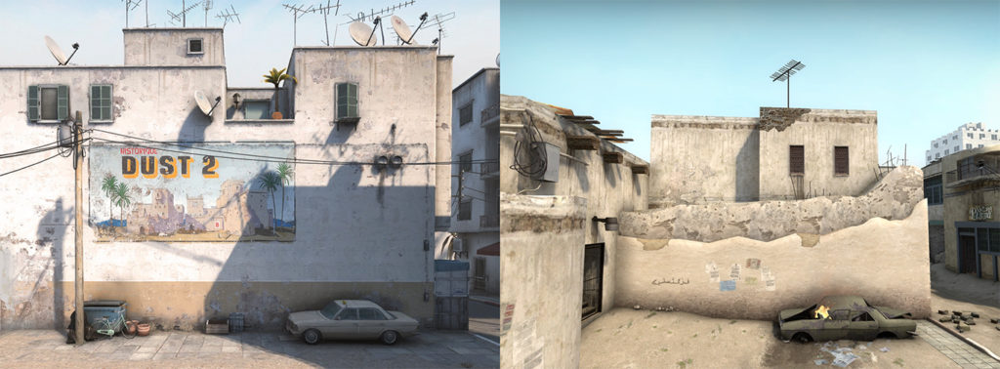
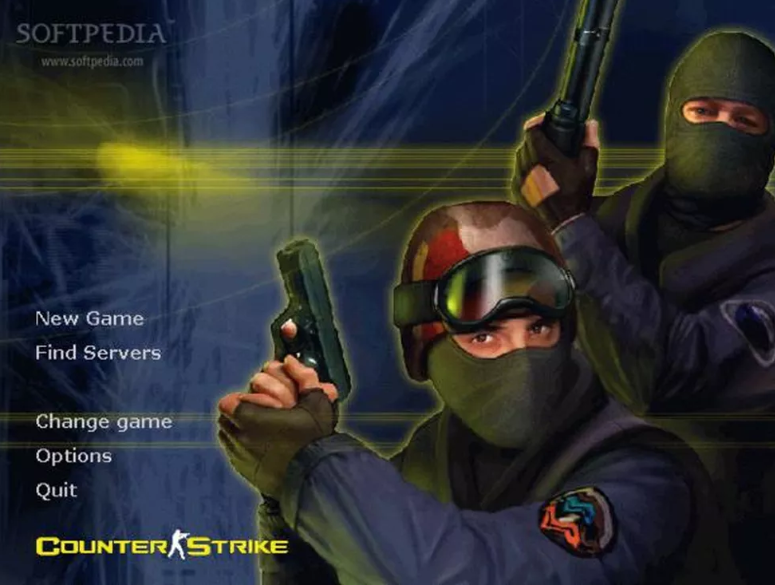

counter strike 2

Counter-Strike 2 (CS2) foi oficialmente anunciado pela Valve na última quarta-feira (22).
O título está em fase de teste limitado via Steam e tem previsão de lançamento ainda para 2023, durante o verão do hemisfério norte -- ou seja, no inverno brasileiro.
A nova versão trará update para o motor gráfico Source 2, algo muito aguardado pelos jogadores e, que, eventualmente, se tornou uma espécie de piada na comunidade devido à demora.
Sem surpresas por conta da atualização para a Source 2, os icônicos mapas de Counter-Strike terão um visual repaginado com o novo motor gráfico. Vale ressaltar, porém, que tudo aquilo que se sabe a respeito de Dust2, Nuke, Overpass, entre outros, não ficará desatualizado. Isso porque o grande foco da sequência é a melhoria gráfica, e não modificações profundas nas arenas e posições já conhecidas pelos jogadores.
O jogo Counter-Strike nasceu de um simples mod, sem a pretensão de se tornar um grande sucesso, mas ao permitir que equipes de jogadores (ou clãs) entrassem em disputa, conseguiu alcançar um destaque que nem seus produtores poderiam prever. O jogo (também conhecido como CS) foi um dos responsáveis pela popularização das LAN Houses em todo o mundo. Além disso, graças a Counter-Strike, uma nova modalidade nasceu (ou pelo menos ganhou um nome) entre as pessoas que jogavam muito e se dedicavam mais que o normal: O esporte eletrônico.
